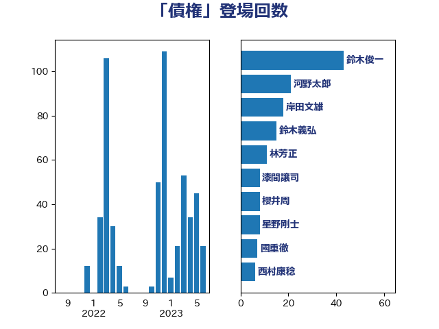

単語「債権」

| 鈴木俊一 | 自由民主党 | 43 回 |
| 河野太郎 | 自由民主党 | 21 回 |
| 岸田文雄 | 自由民主党 | 18 回 |
| 鈴木義弘 | 国民民主党 | 15 回 |
| 林芳正 | 自由民主党 | 11 回 |
| 漆間譲司 | 日本維新の会 | 8 回 |
| 櫻井周 | 立憲民主党 | 8 回 |
| 星野剛士 | 自由民主党 | 8 回 |
| 國重徹 | 公明党 | 7 回 |
| 西村康稔 | 自由民主党 | 6 回 |
| 石橋通宏 | 立憲民主党 | 6 回 |
| 高木かおり | 日本維新の会 | 5 回 |
| 浜田聡 | NHK党 | 5 回 |
| 上田勇 | 公明党 | 5 回 |
| ながえ孝子 | 無所属 | 5 回 |
| 階猛 | 立憲民主党 | 4 回 |
| 金子恭之 | 自由民主党 | 4 回 |
| 柳ヶ瀬裕文 | 日本維新の会 | 4 回 |
| 安江伸夫 | 公明党 | 4 回 |
| 加藤勝信 | 自由民主党 | 4 回 |
| 住吉寛紀 | 日本維新の会 | 4 回 |
| 萩生田光一 | 自由民主党 | 3 回 |
| 緑川貴士 | 立憲民主党 | 3 回 |
| 石原宏高 | 自由民主党 | 3 回 |
| 牧原秀樹 | 自由民主党 | 3 回 |
| 永岡桂子 | 自由民主党 | 3 回 |
| 山田太郎 | 自由民主党 | 3 回 |
| 堂込麻紀子 | 無所属 | 3 回 |
| 齋藤健 | 自由民主党 | 2 回 |
| 鈴木庸介 | 立憲民主党 | 2 回 |
| 西銘恒三郎 | 自由民主党 | 2 回 |
| 神谷宗幣 | 参政党 | 2 回 |
| 神田憲次 | 自由民主党 | 2 回 |
| 牧山ひろえ | 立憲民主党 | 2 回 |
| 浅川義治 | 日本維新の会 | 2 回 |
| 水野素子 | 立憲民主党 | 2 回 |
| 松本剛明 | 自由民主党 | 2 回 |
| 東徹 | 日本維新の会 | 2 回 |
| 平林晃 | 公明党 | 2 回 |
| 平木大作 | 公明党 | 2 回 |
| 市村浩一郎 | 日本維新の会 | 2 回 |
| 山本太郎 | れいわ新選組 | 2 回 |
| 山岡達丸 | 立憲民主党 | 2 回 |
| 宮崎勝 | 公明党 | 2 回 |
| 堀場幸子 | 日本維新の会 | 2 回 |
| 嘉田由紀子 | 無所属 | 2 回 |
| 吉川元 | 立憲民主党 | 2 回 |
| 原口一博 | 立憲民主党 | 2 回 |
| 前川清成 | 日本維新の会 | 2 回 |
| 串田誠一 | 日本維新の会 | 2 回 |
| 中山展宏 | 自由民主党 | 2 回 |
| 金田勝年 | 自由民主党 | 1 回 |
| 道下大樹 | 立憲民主党 | 1 回 |
| 赤羽一嘉 | 公明党 | 1 回 |
| 落合貴之 | 立憲民主党 | 1 回 |
| 芳賀道也 | 国民民主党 | 1 回 |
| 紙智子 | 日本共産党 | 1 回 |
| 稲田朋美 | 自由民主党 | 1 回 |
| 稲津久 | 公明党 | 1 回 |
| 福重隆浩 | 公明党 | 1 回 |
| 福田昭夫 | 立憲民主党 | 1 回 |
| 福島みずほ | 社会民主党 | 1 回 |
| 石井章 | 日本維新の会 | 1 回 |
| 田中昌史 | 自由民主党 | 1 回 |
| 片山さつき | 自由民主党 | 1 回 |
| 浜地雅一 | 公明党 | 1 回 |
| 浅野哲 | 国民民主党 | 1 回 |
| 浅田均 | 日本維新の会 | 1 回 |
| 河野義博 | 公明党 | 1 回 |
| 沢田良 | 日本維新の会 | 1 回 |
| 櫻井充 | 自由民主党 | 1 回 |
| 森本真治 | 立憲民主党 | 1 回 |
| 梅村聡 | 日本維新の会 | 1 回 |
| 柿沢未途 | 無所属 | 1 回 |
| 松沢成文 | 日本維新の会 | 1 回 |
| 松原仁 | 立憲民主党 | 1 回 |
| 杉本和巳 | 日本維新の会 | 1 回 |
| 末次精一 | 立憲民主党 | 1 回 |
| 斉藤鉄夫 | 公明党 | 1 回 |
| 後藤茂之 | 自由民主党 | 1 回 |
| 広瀬めぐみ | 自由民主党 | 1 回 |
| 平沼正二郎 | 自由民主党 | 1 回 |
| 川合孝典 | 国民民主党 | 1 回 |
| 岸真紀子 | 立憲民主党 | 1 回 |
| 山際大志郎 | 自由民主党 | 1 回 |
| 山田勝彦 | 立憲民主党 | 1 回 |
| 山井和則 | 立憲民主党 | 1 回 |
| 山下貴司 | 自由民主党 | 1 回 |
| 小山展弘 | 立憲民主党 | 1 回 |
| 大塚耕平 | 国民民主党 | 1 回 |
| 大口善徳 | 公明党 | 1 回 |
| 吉田宣弘 | 公明党 | 1 回 |
| 古賀之士 | 立憲民主党 | 1 回 |
| 勝部賢志 | 立憲民主党 | 1 回 |
| 佐々木さやか | 公明党 | 1 回 |
| 中田宏 | 自由民主党 | 1 回 |
| 中川宏昌 | 公明党 | 1 回 |